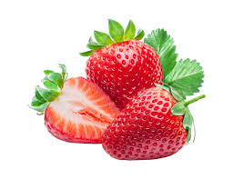
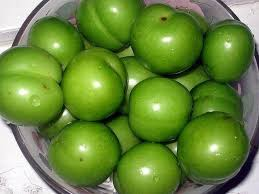
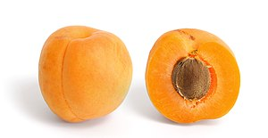

<h1>ჩემი საყვარელი ხილი</h1>
<!-- დავალება: შექმენით საიტი სათაურად ჩემი საყვარელი ხილი. გამოიტანეთ მინიმუმ 3 საყვარელი ხილის ფოტო, მათ ზემოთ კი გამოიყენოთ h2.
 ფოტოების ქვემოთ გამოიყენეთ p თეგი, სადაც დაწერთ თუ რატომ გიყვართ ეს ხილი. საბოლოოდ აიღეთ ერთი ღილაკი. -->
 
 <P>არ ვიცი რატო მიყარს</P>
 
 <p>გემრიელია</p>
 
 <p>სასარგებლოა</p>